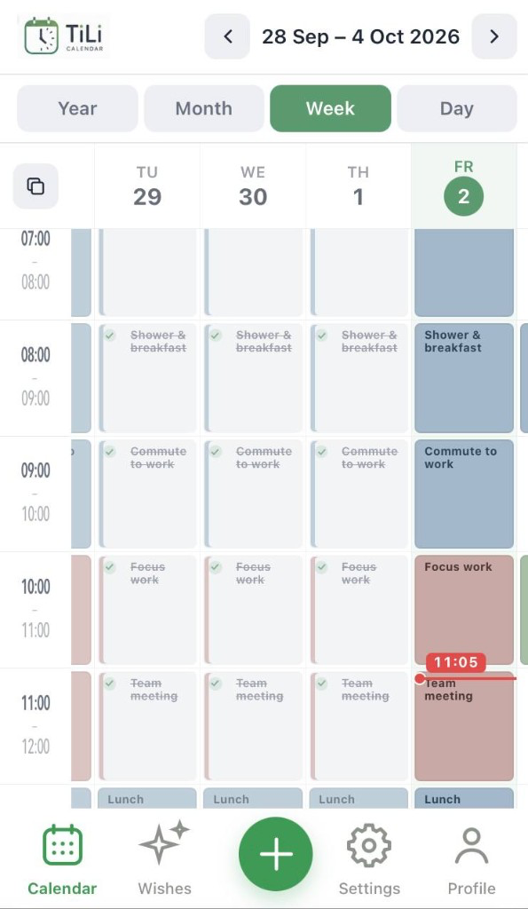
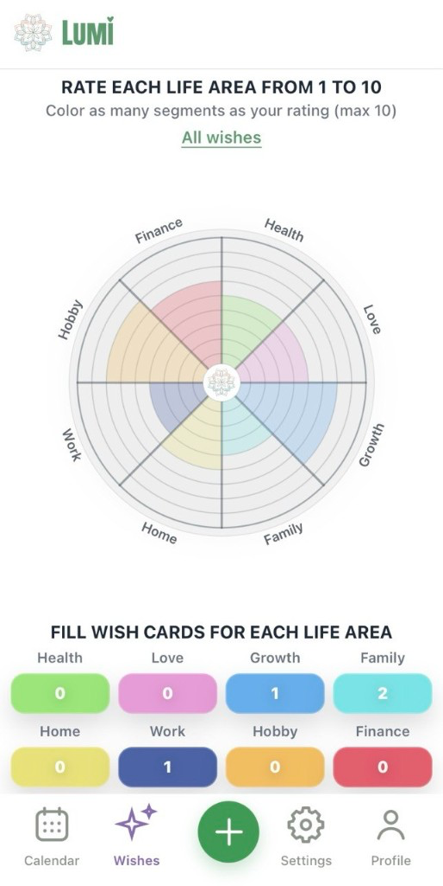
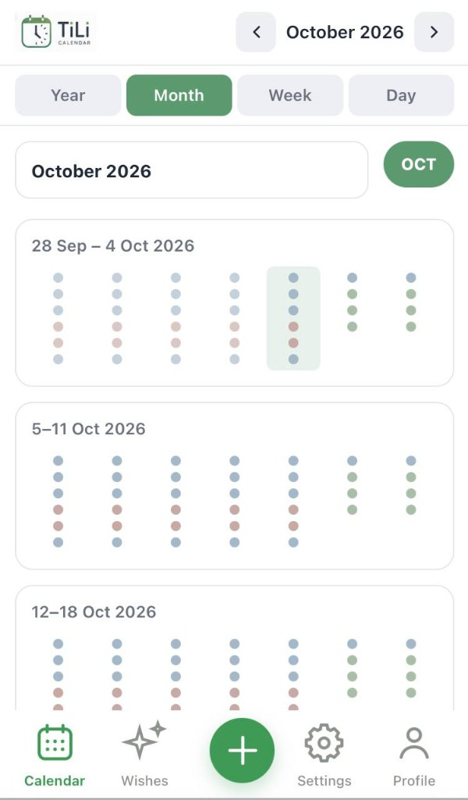
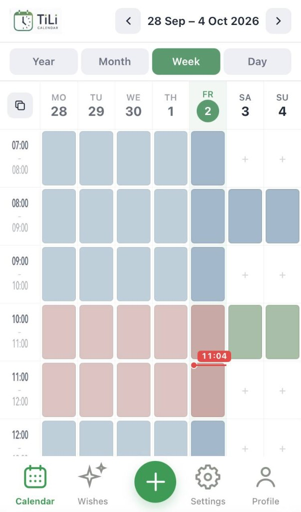

У тебя есть время. Используй его по-настоящему.
TiLi помогает увидеть свой день не как бесконечный список дел, а как пространство времени. Lumi помогает не забывать о том, чего ты действительно хочешь.


01
TiLi — календарь твоего времени
TiLi показывает не просто то, что тебе нужно сделать. Он показывает, когда в твоём дне это действительно произойдёт.
Обычный список задач говорит: «У тебя 8 дел». TiLi показывает другое: «Вот как выглядит твой сегодняшний день».
Каждое дело получает своё место во времени. День — часовая сетка: занятые часы, свободное пространство, куда уходит день.
- ВремяКаждая задача — конкретное место в течение дня.
- Свободное времяПустое пространство — тоже часть дня.
- Несколько уровнейГод → месяц → неделя → день.
- Быстрое планированиеСоздать задачу из нужного часа.
- НапоминанияБаннер в нужный момент (PWA + настройки).
- КатегорииРабота, личное, семья — структура дня.


Не список дел.
Сетка твоего времени.
02
Lumi — календарь твоих желаний
Помогает не забывать о том, что действительно важно. Записывай желания, разбивай их на маленькие шаги и двигайся к мечте шаг за шагом.
- Желания и цели
- Маленькие шаги
- Чувства и состояния
- Отслеживание прогресса
- Напоминания и поддержка
- Визуализация и вдохновение
03
Время и желания — рядом,
но каждое на своём месте.
TiLi
Время
- Что я делаю?
- Когда я это делаю?
- Сколько времени у меня есть?
Lumi
Желания
- Чего я хочу?
- Почему это важно?
- Что я чувствую?
- Какой маленький шаг могу сделать?
Вместе
Желание → шаг → время → действие
Как Lumi и TiLi связаны
- У меня есть желание.
- Я записываю его в Lumi.
- Разбиваю на маленький шаг.
- Если шаг требует времени — отправляю его в TiLi.
- TiLi показывает, когда я это сделаю.
Lumi хранит то, чего ты хочешь. TiLi помогает найти для этого место в реальном времени.
У тебя уже есть время.
Вопрос только в том,
на что ты его потратишь.
Попробовать TiLi
Работает в браузере. Без сложной регистрации.